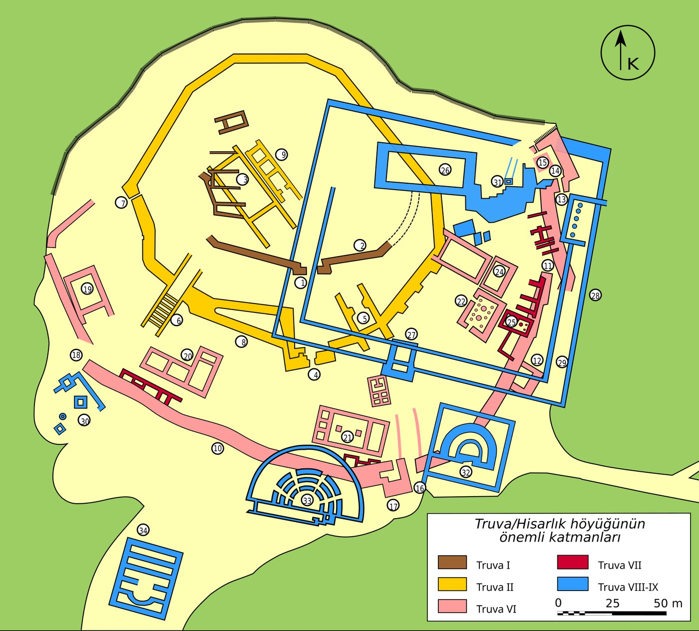

ⓘ
ⓘTroya se convirtió en la ciudad más famosa de la literatura universal gracias a la Ilíada de Homero. El montículo de Hisarlık contiene nueve capas principales construidas unas sobre otras durante unos cuatro mil años, desde el Bronce Antiguo hasta la época romana. Las excavaciones de Heinrich Schliemann en la década de 1870 mostraron al mundo que la leyenda se basaba en un lugar real, aunque sus métodos apresurados también dañaron algunas capas. Los trabajos científicos posteriores revelaron una ciudad poderosa que controlaba el comercio entre el Egeo y el mar Negro. Se pasea entre murallas, rampas, megarones y un teatro romano. Patrimonio Mundial de la UNESCO desde 1998.
⏳ Viaje en el tiempo
| Entonces | Hoy |
|---|---|
| Ciudad costera sobre una bahía a la entrada de los Dardanelos | Hoy a unos 5 km tierra adentro, en medio de una llanura |
| 9 ciudades principales y 46 fases constructivas superpuestas durante unos 4.000 años | Un montículo de unos 20 m, como un edificio de 6–7 plantas |
| En la Edad del Bronce Tardío, una ciudadela empinada y una ciudad baja de unas 30 hectáreas | Un barrio del tamaño de 40 campos de fútbol |
| Una posición que controlaba el estrecho hacia el mar Negro | Aún hoy la boca de una de las vías marítimas más transitadas del mundo |
| "Tesoro de Príamo": hallado por Schliemann en el nivel Troya II, siglos anterior al rey legendario | Sacado de contrabando; hoy en su mayor parte en un museo de Moscú |
| La ciudad identificada con la Troya de la Ilíada de Homero | Patrimonio Mundial de la UNESCO desde 1998, con el Museo de Troya al lado |
🎧 Un día en Troya
Es el año 1300 a. C. Su barco llega del Egeo con viento de popa y entra en la bahía. En la colina, tras murallas y torres de piedra, se alza la ciudadela; quizá sea la ciudad que Homero llamó de altas murallas.
Desde el puerto sube entre las casas de la ciudad baja. Los mercaderes intercambian mercancías de las islas del Egeo, de Anatolia y del mar Negro.
Al atardecer cruza la puerta de la ciudadela. Desde la muralla, el estrecho y la bahía quedan a sus pies. Por eso todos quieren conquistar Troya.
Hoy el mar está a unos 5 km; los ríos rellenaron la bahía con sedimentos y la convirtieron en llanura. En medio del montículo está la profunda zanja de Schliemann, en cuyas paredes se ven los estratos de nueve ciudades como porciones de tarta.
Las cifras son estimaciones; las fuentes dan valores distintos. El dibujo es ilustrativo, no a escala.
Plano del yacimiento

Plano: Bibi Saint-Pol · Public domain · Wikimedia Commons
Preguntas frecuentes
¿Dónde está Troya?
Troya se encuentra en Merkez, Çanakkale (Mármara). Use el mapa o el botón de cómo llegar de esta página.
¿Cuánto tiempo se necesita para visitar Troya?
Duración media de la visita: 2–4 horas.
¿Es válido el Museum Pass en Troya?
Suele ser válida en los museos y yacimientos del Ministerio.
¿De qué época es Troya?
Troya data del periodo: Edad del Bronce / Romano.
¿Qué más se puede ver cerca de Troya?
Lugares culturales más cercanos: Museo de Troya (~1 km), Memorial de Helles (~11 km), Yacimiento de Alejandría de Tróade (~23 km).
¿Hay audioguía para Troya?
Sí. Con el botón Escuchar de esta página puede oír la presentación en 7 idiomas.
♿ Accesibilidad
Todavía no hay información de accesibilidad verificada para este lugar. La recopilamos de visitantes y museos y la publicamos aquí tras comprobarla.
En los museos y yacimientos del Ministerio de Cultura y Turismo, las personas con discapacidad y un acompañante entran gratis presentando un documento acreditativo. Confirme las condiciones vigentes antes de ir. Guía de accesibilidad →
♿ Enviar información de accesibilidad
Guías relacionadas
Fotos
Alojamiento y restaurantes cercanos
¿Quiere que su negocio aparezca aquí? Publicidad